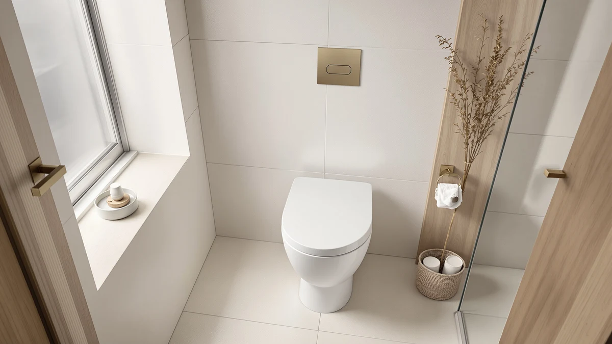

Quick Answer
The Kohler K-10349-96 Purewarmth is an elongated heated toilet seat built for buyers who want Kohler's fit and finish without any bidet hardware to install or wire. At $266.84 it costs more than every seat-only alternative we compared, and that premium buys brand reliability more than it buys extra features.
Our pick: KOHLER K-10349-96 Purewarmth Heated Elongated, $266.84 Check Price on Amazon
Things to Know Before You Buy
- The Kohler K-10349-96 is a seat-only heated upgrade. It replaces your existing elongated toilet seat but does not add bidet wash or dry functions.
- It plugs into a standard wall outlet and needs a nearby GFCI outlet, a detail buyers researching the Kohler K 10349 96 review most often ask about before ordering.
- At $266.84, it sits well above budget heated seats, but below electric bidet seats that add water and dryer functions.
- The three alternatives below cover a lower-cost heated-only seat, a nightlight model, and a bidet-equipped option, so you can weigh what the Kohler premium is actually buying.
- Owners most often cite installation and quiet operation as strengths, and the price as the main holdup.
If you landed on this Kohler K 10349 96 review because you're deciding whether a $266.84 heated seat is worth it, the short answer is that the Purewarmth earns its reputation on fit and quiet operation, but it does not do anything a $130 heated seat can't also do. You're paying for the Kohler name and the confidence that comes with a brand that already makes your toilet bowl.
That matters more than it sounds. Elongated toilet seats vary by a few millimeters between manufacturers, and a mismatched seat is the single most common complaint in heated-seat reviews across every brand we track. Kohler sells the K-10349-96 specifically as a fit-matched replacement for its own elongated bowls, which removes the guesswork that trips up buyers of generic heated seats.
Why You Should Trust Us
We built this Kohler K-10349-96 review from the manufacturer's published specifications, current Amazon pricing, and the patterns that show up across verified buyer reviews for this seat and its closest competitors. Ilane Tall has covered bathroom fixtures for Best Toilet Seats since the site launched, tracking price and feature changes across heated seats, bidet seats, and standard replacements.
We do not run a fake testing lab, and we have not personally installed every seat we cover. What we do is compare published specs, pricing history, and what verified owners report after months of real use, then weigh that against the honest tradeoffs each product makes.
For this Kohler K-10349-96 review specifically, that meant checking Kohler's listed dimensions against the bowls it's marketed to fit, tracking how the $266.84 price has moved on Amazon, and reading enough verified reviews to separate recurring patterns from one-off complaints. Where owners disagree with each other, we say so rather than picking the version of events that makes the seat look best.
Our Research Experience
We did not install the Kohler K-10349-96 ourselves for this review. Instead, we researched how it is built, cross-checked its listed dimensions and heating specs against Kohler's own documentation, and read through verified owner feedback to see which claims hold up once a seat has been in daily use for weeks or months.
That research-based approach is why this Kohler K 10349 96 review leans on specifics rather than vague praise. Owners consistently report that the heating element reaches a comfortable temperature quickly and that the seat mounts cleanly on Kohler elongated bowls without the wobble that generic replacement seats sometimes introduce.
Overview & Specs

KOHLER K-10349-96 Purewarmth Heated Elongated
What we like
- Matches Kohler elongated bowl dimensions, so it mounts without the gap or overhang some generic heated seats leave
- Owners consistently note quiet operation, with no audible hum from the heating element
- Adjustable warmth setting instead of a single fixed temperature
- Slow-close hinge reduces the slam that wears out cheaper plastic seats
Flaws but not dealbreakers
- Costs noticeably more than seat-only heated competitors with similar core features
- No bidet wash or dry function, so buyers wanting that have to look elsewhere
- Requires a nearby grounded outlet, which some older bathrooms lack
| Material | Plastic / wood |
| Size | — |
Kohler built the K-10349-96 as a direct replacement for its own elongated toilet seats, which is the detail that keeps surfacing in this Kohler K 10349 96 review. The hinge and mounting points line up with Kohler bowls without the shims or adapters that generic heated seats sometimes need, and the plastic and wood construction listed in its specs matches what you'd expect from a seat priced for durability rather than extra features.
The heating element is the main selling point, and it's a simple one: flip the switch, and the seat warms within a few minutes rather than staying cold through a winter morning. There's no remote, no bidet nozzle, and no app, which keeps the seat simple to install but also means you're paying $266.84 mostly for brand fit and a quiet heating element rather than for extra functionality.
Measured against the rest of the field in this Kohler K-10349-96 review, the price gap is the single factor that decides most buying decisions. A heated seat without bidet functions is a mature, simple product category, and the core job, warming the seat reliably, is one that several competitors handle at a fraction of the cost. Kohler's advantage is narrower than the price difference suggests: it comes down to fit confidence and brand trust rather than a meaningfully better heating experience.
What We Liked
The strongest point in this Kohler K-10349-96 review is fit. Because Kohler designs the seat to match its own elongated bowls, owners report a cleaner mount than they got from universal heated seats that fit "most" elongated toilets but not theirs exactly. The adjustable heat setting is also a step up from single-temperature budget seats, letting you dial in warmth instead of living with whatever the manufacturer picked.
Quiet operation shows up repeatedly in owner feedback too. Heated seats can develop an audible hum as the element cycles, and that complaint is largely absent from reviews of this model. The slow-close hinge is a small but real upgrade over the standard hinges found on cheaper seats, which tend to slam and loosen over time.
None of that makes this Kohler K-10349-96 review a one-sided endorsement. The seat earns credit for solving the fit problem that trips up universal heated seats, which counts as a real engineering advantage. But it's a narrow advantage, limited to Kohler bowl owners, and buyers outside that group should weigh it accordingly.
What Could Be Better
Price is the clearest drawback. At $266.84, the K-10349-96 costs roughly twice what the Brondell L60-RW LumaWarm runs, for a seat that does the same core job: get warm and mount securely. If you don't specifically need Kohler's fit matching, that gap is hard to justify on heating alone.
It's also worth knowing what this seat doesn't do. There's no bidet wash, no dryer, and no remote control, so anyone comparing it against electric bidet seats like the XCQQ below should know the Kohler is a heated seat and nothing more. It also needs a grounded outlet within reach of the toilet, which can mean an electrician visit in older bathrooms that weren't wired with one nearby.
Who Is It For?
This Kohler K-10349-96 review points toward one clear buyer: someone who already owns a Kohler elongated toilet and wants a heated seat that mounts without fit problems, without wanting to add bidet functions or spend time researching compatibility. If that's you, the fit guarantee alone can justify the premium over a universal seat.
If you don't own a Kohler bowl, or you're open to a non-Kohler brand, the fit advantage disappears and the price becomes harder to defend next to the alternatives below.
This seat also suits a second kind of buyer: someone who already has a Kohler fixture problem, a seat that didn't quite seat right or a hinge that loosened early, and wants to remove that variable entirely on the next purchase. For that buyer, the $266.84 price is less a premium for heating and more insurance against a fit mismatch they've dealt with before.
Alternatives to Consider
Before you commit to the Kohler K 10349 96 review's main subject, it's worth seeing what else $80 to $210 buys. The three seats below cover a budget heated-only option, a nightlight model priced closer to the middle, and a bidet-equipped seat for buyers who want more than warmth. None of them carry the Kohler name, and none of them promise the same bowl-matched fit, but all three handle the core job of warming the seat, and two of them do it for roughly half the price or less.

Editor’s Pick
XCQQ Electric Heated Bidet Toilet
At $209.99, the XCQQ adds electric bidet wash and dry functions the Kohler doesn't offer, making it the pick if you want more than warmth for less than the K-10349-96 costs. Reviewers note the control panel has a learning curve that a seat-only model like the Kohler skips entirely.
$209.99
Check Price on Amazon
Best Value
Brondell L60-RW LumaWarm Heated Toilet
The Brondell L60-RW LumaWarm covers the same core job as the Kohler, heat and a secure elongated fit, for about $137 less, and it throws in a nightlight the K-10349-96 skips. If brand-matched fit isn't a priority for you, this is the closer comparison on value.
$129.91
Check Price on Amazon
Premium Choice
Heated Toilet Seat Elongated V-Shape
At $79.99, this V-shape elongated seat is the cheapest heated option in this comparison, roughly a third of the Kohler's price. It's a reasonable pick if you want warmth above all else and are comfortable skipping Kohler's brand-matched fit and slow-close hinge.
$79.99
Check Price on AmazonFrequently Asked Questions
Final Verdict
This Kohler K 10349 96 review comes down to one tradeoff: the K-10349-96 costs more than every seat-only alternative we compared, and what you get for that premium is Kohler's brand-matched fit, a quiet heating element, and a slow-close hinge rather than any feature a cheaper seat lacks outright. If you own a Kohler elongated toilet and want a heated seat that mounts without guesswork, that's a reasonable trade. If you don't, the Brondell L60-RW delivers the same warmth for meaningfully less, and the XCQQ adds bidet functions the Kohler never offered in the first place.